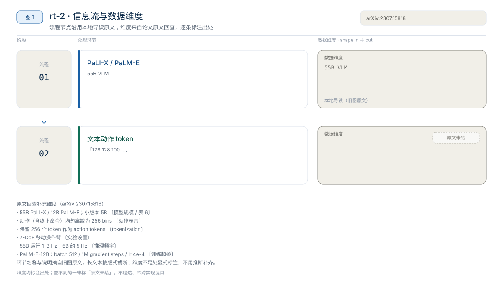

RT-1 论文精读：把连续动作切成 256 个 bin 的机器人 Transformer
RT-1 重新分配的是“连续控制”与“序列建模”的接口——把每个动作维度均匀切成 256 个 bin，让 Transformer 用分类的方式出动作，而不是回归连续值。
动作表示2022
RT-2 用 55B 的 PaLI-X 或 PaLM-E，把机器人动作编码成文本字符串，并在机器人数据与互联网 VQA 数据上联合微调；推理频率低于 1Hz。它的价值是证明互联网视觉语言知识可以迁移到机器人控制，代价是模型规模与推理速度。本地章节没有给出 RT-2 的代码、权重、成功率或训练配方，因此本文按“范式阅读”写，不按“可复现”写。
本文反复用到的对照数字：RT-2 参数量 55B、推理低于 1Hz、动作为文本 token；RT-1 参数量 35M、推理约 3Hz、每维动作 256 bins。以上均为作者报告、经本地章节转述，本文未核对论文原文。
说明：本文按paper-deep-read结构生成；事实来自本仓库 RT 系列导读。章节未给论文节号/表号、完整成功率与训练配方；公开入口见 §1，文中只在必要处注明。
标记约定：作者报告（章节转述） 指论文结论经章节转述、本文未核对原文；章节陈述 指本地导读自己的判断；章节代码 指导读中给出的示例代码。
| 资源 | 网页来源 | 说明 |
|---|---|---|
| 论文 | arXiv:2307.15818 | 公开入口* |
| 源码 | 无官方 RT-2 代码；RT-1 参考 google-research/robotics_transformer | 公开入口* |
| 权重 | 无公开权重 | — |
| 项目页 | robotics-transformer2.github.io | 公开入口* |
* 公开入口未在本地章节核验；本地章节只用于事实核对。
论文：RT-2（2023，Google DeepMind）；arXiv：2307.15818（公开入口，未在本地章节核验）；版本：本地导读整理，不是论文版本号。
版本提示：本地导读把 RT-1、RT-2、RT-X 放在同一章对照（章节 §5 有一张三代对照表）。本文只取 RT-2 部分，RT-1/RT-X 的数字仅用于解释差异，不与 RT-2 混成同一评测口径。
RT-2 的设计取舍是：不为机器人新增专用动作头，而是把动作写成文本 token，让同一个 VLM 在生成语言答案的同时生成动作串。

图 1：RT-2 的训练与推理信息流。自绘，依据本地导读；不是论文原图。
对比 RT-1 的路径：RT-1 用 EfficientNet + FiLM + Token Learner + Transformer，动作走每维 256 bins 的分类；RT-2 把动作放进 VLM 的文本生成接口。变化不只是“模型更大”，而是动作的表示从分类标签变成了语言 token。
来源：章节 §3.1–§3.3、§5 对照表。
章节没有给 RT-2 的分层结构、张量维度或动作词表大小；能确认的是它没有新增机器人专用模块，而是在预训练 VLM 上做联合微调。因此本节按“backbone → 动作 token 化 → 数据混合”三件事组织，不虚构层数与维度。
| 项目 | RT-1 | RT-2 |
|---|---|---|
| 发布时间 | 2022 | 2023 |
| 参数量 | 35M（作者报告，章节转述） | 55B（作者报告，章节转述） |
| Backbone | EfficientNet + FiLM + Token Learner + Transformer | PaLI-X 或 PaLM-E |
| 输入 | 图像 + 文本指令 | 图像 + 文本 |
| 动作表示 | 每维 256 bins 的离散 token | 文本 token（如 128 128 100 ...） |
| 推理频率 | 约 3Hz（章节称实时） | 低于 1Hz（章节注“需云端或量化”） |
| 训练数据 | 章节未给（仅说明为端到端控制模型） | 机器人数据 + 互联网 VQA（配比未给） |
| 开源状态 | 章节称 Google 开源了 rt-1 代码 | 章节未提供代码或权重入口 |
读这张表要注意：两代的参数量、动作表示和推理频率是章节明确给出的，属作者报告、经章节转述；训练数据与开源状态两行是章节陈述，其中 RT-1 的数据集与规模章节没有展开。
来源：章节 §2.1、§2.2、§3、§5 对照表。
章节用 RT-1 的 tokenizer 代码说明 RT 系列的动作离散化：把每一维连续动作映射到 0–255 的整数，再交给 Transformer 当分类目标。RT-2 沿用“动作变成 token”的思路，但把离散整数写成了文本串；章节没有给出 RT-2 的词表组织方式。
设第 $d$ 维动作为 $a_d$，离散 token 为 $k_d$，词表大小为 $V$，动作范围为 $[a_{\min}, a_{\max}]$，章节代码对应：
$$
k_d = \left\lfloor \operatorname{clip}\!\left(\frac{a_d-a_{\min}}{a_{\max}-a_{\min}},\,0,\,1\right)\times (V-1)\right\rfloor
$$
$$
a_d = \frac{k_d+0.5}{V}\times (a_{\max}-a_{\min}) + a_{\min}
$$
章节代码的默认值是 $a_{\min}=-1$、$a_{\max}=1$、$V=256$；$k_d$ 取值 0–255。需要说明两点：
读论文时重点看：动作 token 在词表里怎么组织（单维一个 token 还是整串 token）；动作串如何解析回连续值；token 粒度如何同时影响精度与序列长度。
来源：章节 §2.2–§2.3（含 tokenizer 代码）。
| 数据源 | 训练中的角色 | 章节给出的目的 |
|---|---|---|
| 机器人数据（章节未细分字段） | 让 VLM 学会输出动作 | 注入机器人控制能力 |
| 互联网 VQA（图像 + 问题 + 答案） | 与机器人数据混合训练 | 防止灾难性遗忘，保留常识与语义 |
章节的因果解释是：如果只在机器人数据上微调，大模型会丢掉原有的常识推理能力，变成一个“只会干活”的模型；混入 VQA 数据可以缓解这个问题。这是章节对“为什么联合微调”的定性说明，不是消融结论——章节没有给混合比例、采样策略或遗忘指标。
来源：章节 §3.3 与章节图 2（联合微调策略）。
来源：章节 §3。
章节对 RT-2 的结果是定性的：没有任务集、每任务 trials、总测试次数、种子、测试硬件或完整成功率表。因此本节只整理“章节声称了什么能力”，不做数值横比。
| 能力 | 章节描述 | 证据口径 |
|---|---|---|
| 符号推理 | 指令“捡起快灭绝的动物”，模型识别恐龙玩具并抓取；章节称训练数据中没有“灭绝动物”与动作的配对 | 作者报告，经章节转述；无成功率 |
| 视觉语义泛化 | 能识别训练集中未见过的物体与背景 | 作者报告，经章节转述；无成功率 |
| 能力来源 | 章节把能力归因于 VLM 的互联网知识，而不是更大的机器人数据 | 章节陈述；无对照数字 |
读法：这三条能支持“方向可行”的判断，不能支持“RT-2 比 RT-1 高多少”。章节没有给出同一任务上的两代对照，任何百分比都不应从这里推导。若需要数值，只能回论文原文补。
来源：章节 §3.2、§5。
章节只给了一个定性判断：机器人数据 + VQA 的联合微调，比只用机器人数据更能保留通用能力；没有消融表、数据配比或遗忘指标。
| 候选消融 | 章节是否给结果 | 读原文时找什么 |
|---|---|---|
| 只用机器人数据 vs 机器人 + VQA | 仅定性（联合微调更好） | 遗忘指标、VQA 比例、对照任务 |
| PaLI-X vs PaLM-E | 未给 | 两种 backbone 的成功率与延迟 |
| 动作 token 粒度 | 未给 | 粒度对成功率与动作串长度的影响 |
| 机器人数据规模 | 未给 | 数据量与泛化的关系 |
收益是多少、在哪个 benchmark 更明显、读者该不该复用：章节无法回答。能复用的是“混合数据防遗忘”这一设计假设，但必须在自己的数据上验证，不能把章节的定性判断当成已复现结论。
章节没有给论文的节号或表号；下表按章节点名的主题组织，不能当作论文目录使用。
| 阅读主题 | 章节依据 | 论文位置 | 读它回答什么 |
|---|---|---|---|
| 动作即语言 | §3.1 | 章节未标注 | 动作如何编码成文本、词表如何扩展 |
| 涌现能力 | §3.2 | 章节未标注 | 符号推理与视觉泛化的评测任务、数字 |
| 联合微调 | §3.3、图 2 | 章节未标注 | 数据混合比例与防遗忘证据 |
| 两代对照 | §5 对照表 | 章节未标注 | 参数量、动作表示、频率的原始口径 |
| 开源平替 | §5 学习建议 | 章节未标注 | OpenVLA 与 RT-2 的差异 |
来源：章节 §3、§5。
| 指标 | 章节值 | 口径 | 不能推出什么 |
|---|---|---|---|
| RT-2 推理频率 | 低于 1Hz | 章节 §5 对照表，注“需云端或量化” | 具体毫秒数、硬件、batch 大小 |
| RT-1 推理频率 | 约 3Hz | 章节称实时输出控制指令 | RT-2 的延迟上界 |
| 参数量 | RT-2 55B / RT-1 35M | 章节对照表 | 显存占用（还取决于精度与并行方式） |
| 延迟测量协议 | 未给 | — | 无法复现计时或横比 |
按 1000 / 频率 换算：RT-1 约 3Hz 对应每次策略调用约 333ms；RT-2 低于 1Hz 对应每次策略调用超过 1s。这是换算，不是章节实测值。表中的频率与参数量为作者报告、经章节转述；测量协议、硬件与显存章节均未给。
还要区分三个概念：模型延迟、完整请求延迟、重规划间隔。章节只给了推理频率这一层信息；它说明策略调用频率，不说明动作执行频率，也不说明端到端反馈频率。因此 55B/低于 1Hz 只能支持“适合慢层语义接口”的判断，不能用来估算某个具体控制回路的可用性。
来源：章节 §5 对照表、§2。
章节没有给 RT-2 的训练硬件、优化器步数、batch、学习率、warmup、EMA 或数据配比，也没有给 RT-1 的训练配方。能确认的只有两点：
因此本文不写“硬件/步数/有效 batch”级别的配方表，也不写梯度累积公式——这些量章节一个都没有给，按 55B 反推卡数只会得到猜测。三级复现的落点是：理解级可以读导读和 OpenVLA；加载级与训练级在 RT-2 上没有入口（见 §8–§9）。
来源：章节 §3。
本仓库章节没有提供 RT-2 的公开代码、权重或 commit，因此不存在可核对的文件路径，也不能写“从源码读起”。下面给的是替代读法，不是 RT-2 的代码阅读顺序：
容易踩的坑：把“章节有 RT-1 tokenizer 代码”误当成“RT-2 有代码”。两者不是一回事：前者是动作分 bin 的教学示例，后者是 VLM 文本动作接口，章节没有给后者的实现。
来源：章节 §2.3、§3、§4、§5 学习建议。
本地章节没有提供 RT-2 的公开 checkpoint、代码或数据配方，无法按 skill 的标准写加载检查、单 suite 评测与单卡训练。这一节只能写“不可复现”与替代路径。
| 替代路径 | 章节依据 | 能学到什么 | 边界 |
|---|---|---|---|
| RT-1 公开代码 | 章节称 Google 开源了 rt-1 代码 | 动作分 bin、Transformer 控制流程 | 不是 RT-2 的 VLM 文本接口 |
| OpenVLA | 章节称其为 RT-2 开源平替（Llama 2 + Prismatic），可下载权重微调 | 开源 VLM + 动作的微调与评测 | 章节未给具体指标，需按 OpenVLA 核对 |
| RT-X / BridgeData V2 | 章节 §4、§5 学习建议 | 跨形态数据与正迁移 | 不是 RT-2 复现 |
复现分级结论：RT-2 只能做到“理解级复现”，做不到“加载级”或“训练级”复现。上表三条路径都不是 RT-2 的官方链路，不能用来声称复现了 RT-2 的数字。
未在本机验证：以上均为阅读路径，不含可执行命令；章节也没有给出任何安装、下载或评测命令。
来源：章节 §3、§5 学习建议。
RT-2 最值得借的是“动作即语言”的接口思想，而不是 55B 的具体实现。章节给出的两个硬约束——55B 与低于 1Hz——决定了它适合慢层语义，不适合直接驱动高频控制回路。
相关章节：OpenVLA、Galaxea G0.5、RT 系列导读、01 技术专题。